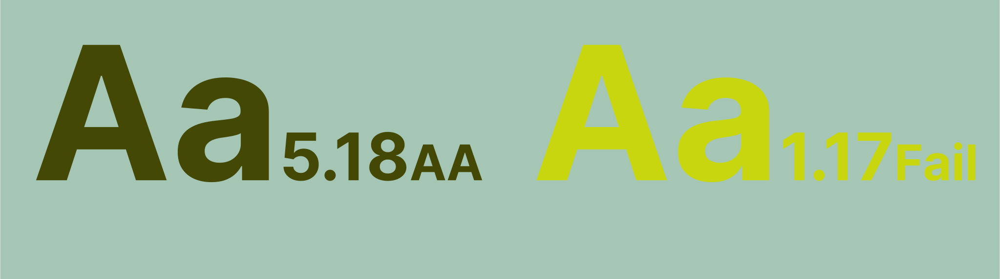

Цвет и контраст
Цвет в научном плакате — это больше, чем просто украшение. Это мощный инструмент, который помогает выделить важное, организовать визуальную структуру и сделать информацию более доступной. Умение правильно работать с цветом и контрастом — шаг к профессиональному, читаемому и эстетически привлекательному дизайну.
Цвет как акцент. Цвет способен направлять взгляд зрителя и подчёркивать ключевые элементы. Используйте его, чтобы выделить заголовки, графики или значимые данные, например, итоговые цифры или выводы. Выберите основную палитру из 2–3 цветов, чтобы избежать визуальной перегруженности. Можно сочетать подобные цвета, те, которые на цветовом круге находятся рядом, голубой и синий, розовый и фиолетовый. Другой путь — выбрать комплиментарные цвета, те, что расположены друг напртив друга: оранжевый и синий. Помните, что цвет — инструмент. Слишком цветастый плакат может показаться непрофессиональным и несерьезным. Подумайте, какой эффект вам нужен.
Читаемость — главный критерий успешного плаката. Контраст между текстом и фоном должен быть достаточным, чтобы информация была видна на расстоянии и при разном освещении. Лучше оставить фон плаката белым. Если текст легенды графика расположен на цветной плашке, проверьте контрастность. Можете воспользоваться онлайн сервисом Сolorable. Он проверяет соотношение двух введенных цветов. Приемлимый результат отмечается тремя буквами А.
Гармоничная цветовая схема делает плакат целостным и профессиональным. Использование одних и тех же цветов для связанных элементов, например заголовков и подзаголовков, помогает структурировать материал. радужных схем и разноцветных блоков. Выберите один цвет для каждого типа информации (например, синий для заголовков, зелёный для графиков). Если графики, которые вы смоделировали в сторонней программе уже имеют определенную цветовую палитру, можете подстроиться под нее.